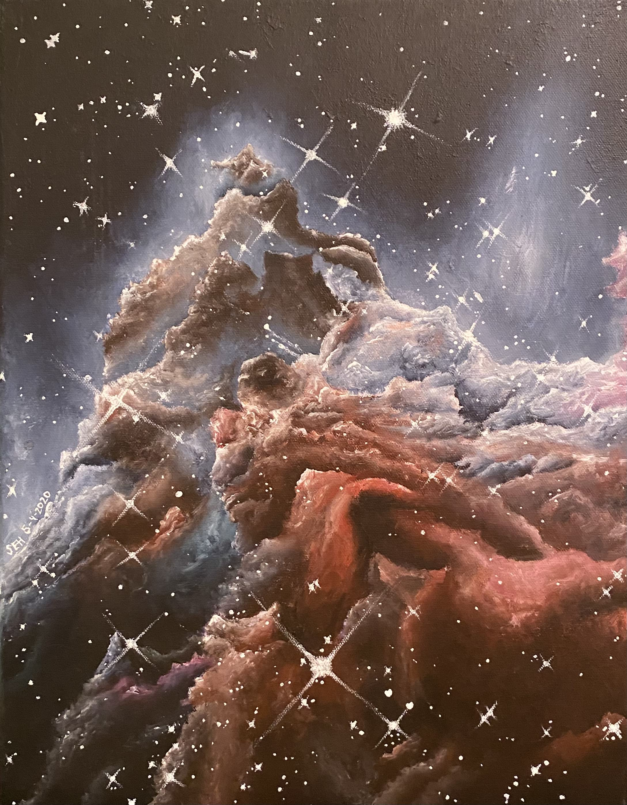

Hi! I am currently a graduate student at Georgia Insitute of Technology working in Dr. John Wise's computational cosmology group. I began my PhD program here in the fall of 2022, in perfect time to start on a project making mock observations and predictions from the Renaissance Simulations for use by those working with JWST and its data. This will be beneficial in the age of JWST thanks to Renaissance's high resolution and focus on high-redshift galaxies. So far, we have shown that the Renaissance Simulations agree well with JWST observations in regards to stellar mass and star formation rate. I am currently working on creating a data catalog of physical properties of the Renaissance Simulations' galaxies, along with mock observations using Powderday, that will be publicly available. Eventually, I'll begin using Renaissance to determine observational signatures of Population III stars and active galactic nuclei in these early galaxies. Along with my current research, I'm interested in black holes, the origins of supermassive black holes, and gravitational waves.
Prior to starting my PhD, I received a bachelors in physics and a minor in Digital Production Arts at Clemson University in the Spring of 2022 where I worked with Dr. Jonathan Zrake on accretion disks and did a senior thesis with him on LISA verification binaries. I also did 2 REUs during my undergraduate at Stony Brook University and Lousiana State University.
Outside of research, I enjoy reading, movies, and art. I particularly enjoy painting and have included an acrylic painting I did back in 2020 of the Monkey Head Nebula from an image taken by the Hubble Space Telescope.
